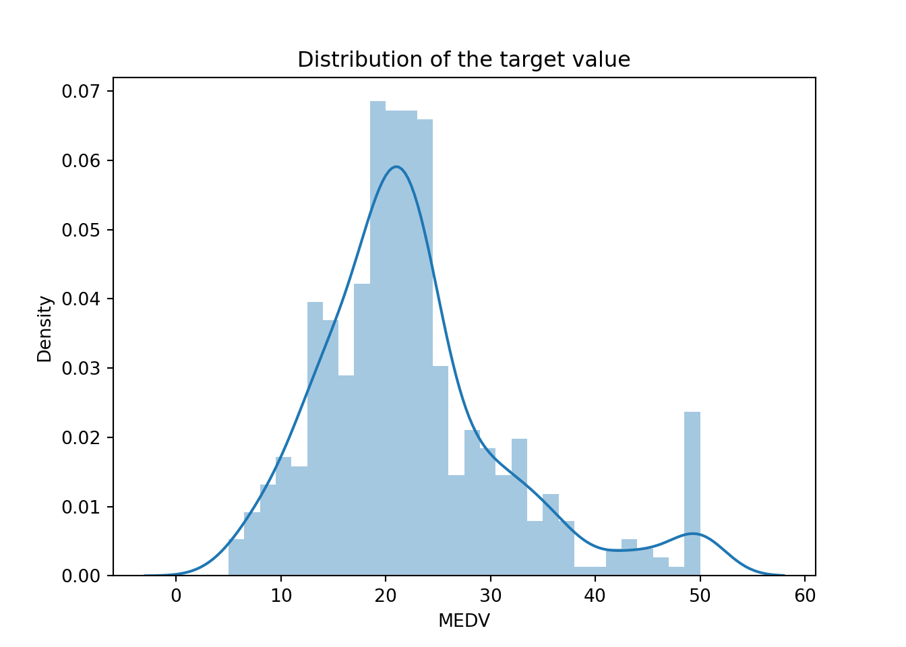

During this course we are going to use Python as programming language. Anaconda is an open-source distribution for Python. It is used for data science, machine learning, deep learning, etc. It comes with more than 300 libraries for data science. Anaconda helps in simplified package management and deployment.
During the labs, you must use Jupyter notebooks. The Jupyter Notebook is the original web application for creating and sharing computational documents. It offers a simple, streamlined, document-centric experience. Jupyter is installed by default when you install Anaconda. You can create notebooks using JupyterLab via your browser or using a text editor like VScode.
Predicting House Value: Boston dataset
In this lab we are going to use a dataset called Boston. It records the median value of houses for 506 neighborhoods around Boston. Our task is to predict the median house value.
Loading Data
Boston dataset
The dataset is available in scikit-learn or also here 🔗. Notice that the format/approach is not the same. You are free to use any of them, it is up to you to adapt your codes correctly.
There is mainly two approaches you need to know for instance:
The features and the target variable are in the same dataframe. In this case you can use the argument formula = target ~ features in certain fitting functions (like in ols(), imitating R’s programming language functions).
The features and the target variable are separated in X and y.
1. Load these necessary libraries for this lab (install them if needed).
import numpy as npimport matplotlib.pyplot as plt import pandas as pd import seaborn as sns # Run the following line to obtain the matplotlib figures in the notebook%matplotlib inline# We will also use sklearn but we will load the necessary modules when needed
2. Load the Boston dataset.
from sklearn.datasets import load_bostonboston_dataset = load_boston()
3. Print the value of the boston_dataset to understand what it contains.
To know more about the features run boston_dataset.DESCR.
The prices of the house indicated by the variable MEDV is our target variable and the remaining are the feature variables based on which we will predict the median value of houses in a district.
3. Load the data into a pandas dataframe using pd.DataFrame. Then print the first 5 rows of the data using head().
boston = pd.DataFrame(boston_dataset.data, columns=boston_dataset.feature_names)boston.head()
We can see that the target value MEDV is missing from the data. We create a new column of target values and add it to the dataframe.
boston['MEDV'] = boston_dataset.target
Remark: the previous steps we evitable if we loaded the data from csv given above using pd.read_csv().
Data preprocessing
4. Check if there are any missing values in the data.
Solution (Click to expand)
boston.isnull().sum()
CRIM 0
ZN 0
INDUS 0
CHAS 0
NOX 0
RM 0
AGE 0
DIS 0
RAD 0
TAX 0
PTRATIO 0
B 0
LSTAT 0
MEDV 0
dtype: int64
Exploratory Data Analysis
Exploratory Data Analysis is a very important step before training the model. In this section, we will use some visualizations to understand the relationship of the target variable with other features.
5. Plot the distribution of the target variable MEDV. You can use the distplot() function from the seaborn library.
Solution
sns.distplot(boston['MEDV'], bins=30)plt.title('Distribution of the target value')plt.show()

6. Calculate the correlation matrix and visualize it (you may use heatmap() from seaborn library). Name the features that are highly correlated with the target variable.
The features that are highly correlated with the target variable are RM and LSTAT where
RM has a strong positive correlation with MEDV (0.7) and
LSTAT has a high negative correlation with MEDV(-0.74).
Correlation
The correlation coefficient ranges from -1 to 1. If the value is close to 1, it means that there is a strong positive correlation (linear tendancy) between the two variables. When it is close to -1, the variables have a strong negative correlation.
Note
For a linear regression model, we select the features which have a high correlation with the target variable. Anyway there is some feature selection techniques you may use, one of them is Backward selection:
Backward selection:
Start with all variables in the model.
Remove the variable with the largest p-value — that is, the variable that is the least statistically significant.
The new \((p − 1)\)-variable model is fit, and the variable with the largest p-value is removed.
Continue until a stopping rule is reached. For instance, we may stop when all remaining variables have a significant p-value defined by some significance threshold.
7. Check for multi-colinearity between the features. More specifically RAD and TAX.
Tip
We should not select colinear features together for training the model. Check this link for one explanation.
Solution
It is not great to have colinearities between your features as it will make harder the interpretation of which feature is important and which is not. Although I don’t believe it will harm your final estimate that much. In a extreme case it can make the matrix \(X^T\cdot X\) hard / impossible to invert. It will also lower the p-value of the two colinear column which may lead to not selecting them.
“Multicollinearity does not reduce the predictive power or reliability of the model as a whole, at least within the sample data set; it only affects calculations regarding individual predictors”
plt.scatter(boston['RAD'], boston['TAX'])plt.title(f"Correlation RAD - TAX : {correlation_matrix['RAD']['TAX']:.2f}" )plt.show()
As we can see we have other quite high colinearity between features but RAD-TAX is the highest.
Splitting the data into training and testing sets
Train test split is a model validation procedure that allows you to simulate how a model would perform on new/unseen data. Here is how the procedure works:
8. Split the data into training and testing sets. We are going to train the model with 80% of the samples and test with the remaining 20%. Use train_test_split() function provided by scikit-learn library
from sklearn.model_selection import train_test_split# complete the codeX = ...Y = ...X_train, X_test, Y_train, Y_test = ...(, , test_size = ..., random_state=5)# print the shapes to verify if the splitting has occured properlyprint(X_train.shape)print(X_test.shape)print(Y_train.shape)print(Y_test.shape)
Solution
from sklearn.model_selection import train_test_split# complete the codeX = boston.drop('MEDV', axis=1)Y = boston[['MEDV']]X_train, X_test, Y_train, Y_test = train_test_split(X, Y, test_size =0.2,random_state=5)# print the shapes to verify if the splitting has occured properlyprint(X_train.shape)
(404, 13)
print(X_test.shape)
(102, 13)
print(Y_train.shape)
(404, 1)
print(Y_test.shape)
(102, 1)
Simple Linear Regression model
In this part, we are going to build a simple linear regression model. We will choose LSTAT as a feature.
11. The LinearRegression() module from scikit-learn does not provide a statistical summary of the regression model. To obtain this summary, re-fit a model using ols() from statsmodels. Analyse the p-value from the summary and interpret.
Solution
import statsmodels.api as smX_train_d = sm.add_constant(X_train_s)model = sm.OLS(Y_train,X_train_d)results = model.fit()print(results.summary())
13. Evaluate the model using MSE (Mean Squarred Error) and R2-score.
from sklearn.metrics import mean_squared_error# train error (MSE)y_train_predict = slm.predict(...)mse_train = ...(..., ...)print("The model performance for training set")print('MSE is {}'.format(mse_train))# test errory_test_predict = slm.predict(...)mse_test = mean_squared_error(..., ...)r2 = r2_score(..., ...)print("The model performance for testing set")print('MSE is {}'.format(mse_test))print('R2 score is {}'.format(r2))
Solution
from sklearn.metrics import mean_squared_error, r2_score# train error (MSE)y_train_predict = slm.predict(X_train_s)mse_train = mean_squared_error(Y_train, y_train_predict)print("The model performance for training set")
The model performance for training set
print('MSE is {}'.format(mse_train))# test error
MSE is 38.45801898706332
y_test_predict = slm.predict(X_test_s)mse_test = mean_squared_error(Y_test, y_test_predict)r2 = r2_score(Y_test, y_test_predict)print("The model performance for testing set")
The model performance for testing set
print('MSE is {}'.format(mse_test))
MSE is 38.821829014286585
print('R2 score is {}'.format(r2))
R2 score is 0.5041523728903132
14. According to the plot in 9, the relationship between LSTAT and MEDV is not linear. Let’s try a transformation of our explanatory variable LSTAT. Re-do the steps from 9 to 13 but using the log of LSTAT. Do you obtain a better model?
We do obtain a better model, interestingly we can visualise that the model is representing a non linear relationship between the variable and the output thanks to this trick.
Multiple Linear Regression model
15. Train a new model using all the variables of the dataset. Evalute the performance of the model.
y_test_predict = results.predict(sm.add_constant(X_test_lg))mse_test = mean_squared_error(Y_test, y_test_predict)r2 = r2_score(Y_test, y_test_predict)print("The model performance for testing set")
The model performance for testing set
print('MSE is {}'.format(mse_test))
MSE is 15.039960438345249
print('R2 score is {}'.format(r2))
R2 score is 0.8079037262146341
The model is better (lower test MSE).
ANOVA (ANalysis Of VAriances)
In this last part we will apply an analysis of variances (ANOVA) in order to test if there is a significant difference of means between two groups \(i\) and \(j\) (Consider group \(i\) is the suburbs bounding the river and \(j\) the suburbs which not). The hypotheses are
\[ H_0 : \mu_i = \mu_j \]
\[ H_1 : \mu_i \neq \mu_j \]
Where \(\mu_i\) is the mean of MEDV in group \(i\).
Anova
This analysis can be conducted during the exploratory data analysis part especially when the target is continuous and a feature is discrete.
20. In the Boston data set there is a categorical variable CHAS which corresponds to Charles River (= 1 if a suburb bounds the river; 0 otherwise). How many of the suburbs in this data set bound the Charles river?
21. Create Boxplots of the median value of houses with respect to the variable CHAS. Do we observe some difference between the median value of houses with respect to the neighborhood to Charles River?
22. Calculate \(\mu_i\) and \(\mu_j\).
23. Apply an ANOVA test of MEDV with respect to CHAS. What do you conclude ?
df sum_sq mean_sq F PR(>F)
C(CHAS) 1.0 1312.079271 1312.079271 15.971512 0.000074
Residual 504.0 41404.216144 82.151223 NaN NaN
Because the p-value is low we can reject the hypothesis that the two groups have the same mean and thus conclude that they have different means. Note that we didn’t check which was the biggest here, just that they are not the same. Because we are checking only the difference between two distribution and not multiple ones.